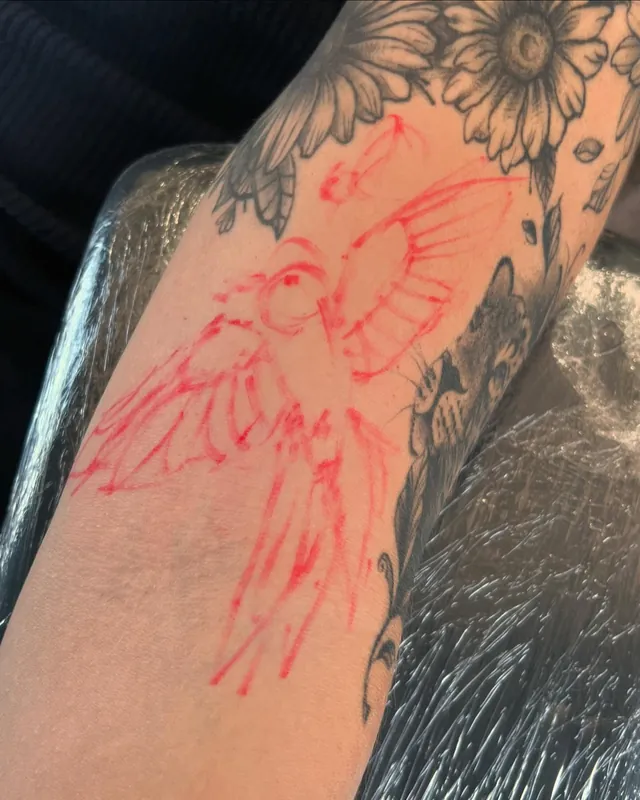
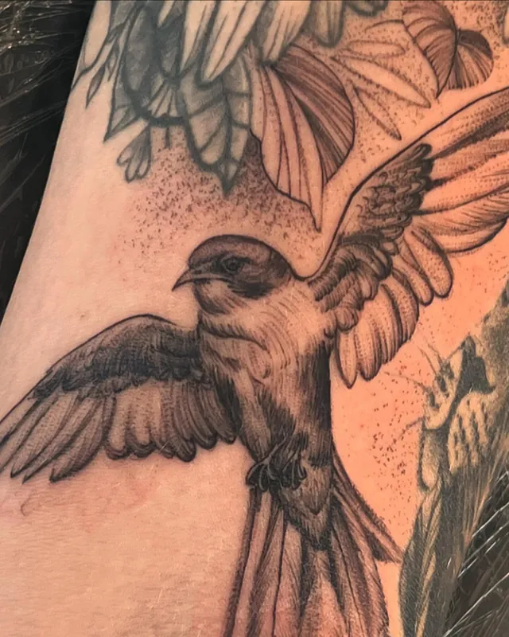

Allan Mine · Tatuador em Curitiba
Cobertura não precisa parecer cobertura.
Aquela tatuagem que você esconde vira uma peça delicada, desenhada à mão livre direto no seu corpo. Mais de 10 anos tatuando.
- Cobertura e reforma
- Cicatrizes
- 100% freehand
Antes e depois
Você nem percebe que tinha uma tatuagem ali
Nome de ex, borboleta feita na adolescência, aquela tatuagem que parece um repolho. Toque em cada foto para ver como era antes.
Rosa sobre uma tatuagem azul borrada
Floral sobre o nome do ex
Escorpião renovado com rosas
A borboleta de mais de 10 anos
Leão sobre estrela e escrita
Rosas sobre a fada da adolescência
Borboleta refeita, agora delicada
- A próxima pode ser a sua.Pedir orçamento de cobertura →
Como funciona
Da tatuagem que incomoda à que você quer mostrar
Mande uma foto
Uma foto da tatuagem antiga com boa luz e o que você gostaria de ter no lugar. Pode ser só uma ideia, um estilo ou uma flor que você ama.
Cobertura ou reforma
Eu avalio a tatuagem e digo o caminho: às vezes ela só precisa ser reformada, às vezes vale cobrir com uma peça nova.
Desenho à mão livre
Desenho direto na pele, em cima da tatuagem antiga, acompanhando a anatomia do seu corpo. Você vê e aprova antes da agulha.
Sessão
Coberturas grandes podem levar mais de uma sessão. Você sai com os cuidados explicados.


O risco vermelho é o desenho que eu faço direto em você. Depois vira tatuagem.
Cicatrizes
Também cubro cicatrizes
Cicatriz de cirurgia ou de acidente: dá para transformar em desenho com o mesmo cuidado de uma cobertura. Me mande uma foto e conte há quanto tempo ela está fechada para eu avaliar.
Trabalhos
Floral, fine line, realismo e pontilhismo
Nem tudo aqui é cobertura. Toque numa foto para ver em tamanho grande.


Quem tatua
Allan Mine
Tatuo há mais de 10 anos e a maior parte das minhas artes nasce na hora, desenhada à mão livre direto na pele, com a inspiração do momento.
Me especializei em cobertura porque sei o peso de esconder uma tatuagem que dá vergonha. Meu trabalho é fazer você esquecer que ela existiu. Já ganhei troféu de pontilhismo com um fechamento 100% freehand.
Qualidade e um bom atendimento são o meu diferencial. Faço da sua ideia uma arte autoral.
- +10
- anos tatuando
- 100%
- freehand
- 22 mil
- seguidores no Instagram
Orçamento
Me mostra a tatuagem que você quer esquecer
Preencha o que souber. A mensagem abre no WhatsApp já escrita e você só manda a foto na conversa.
- Onde
- Curitiba, PR
- (41) 9987-3760
- @allan.mine